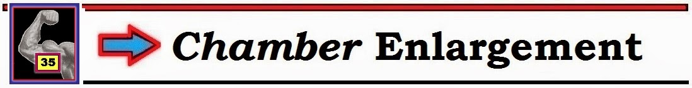
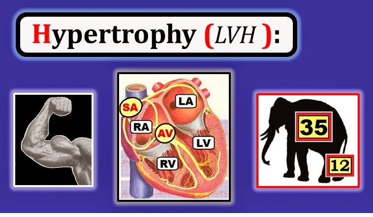
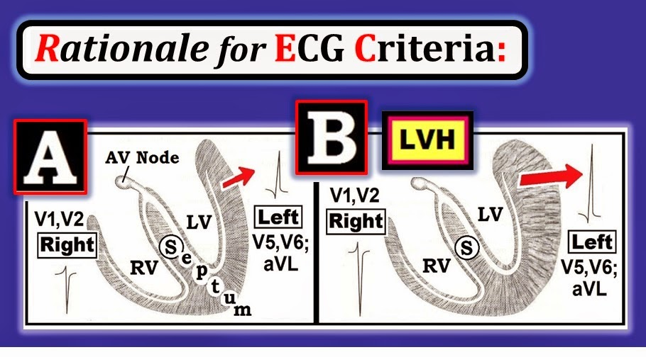
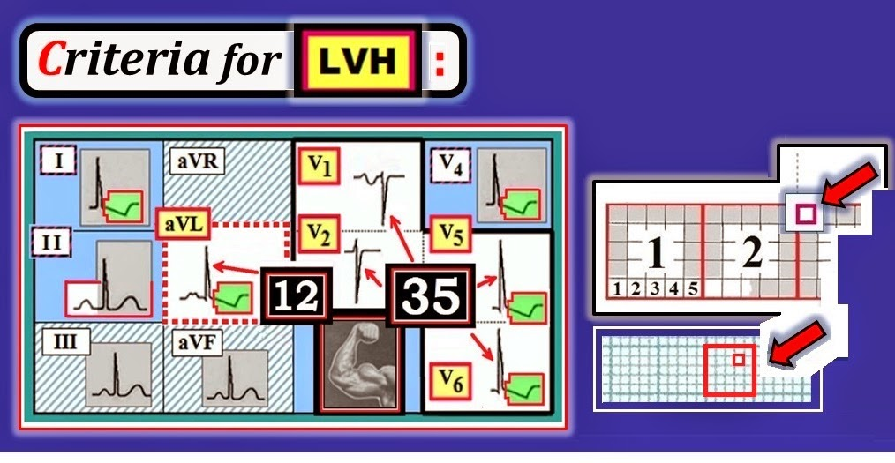
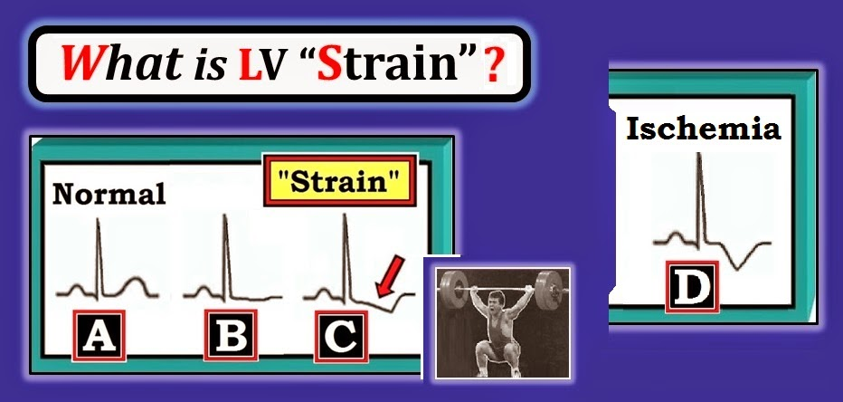
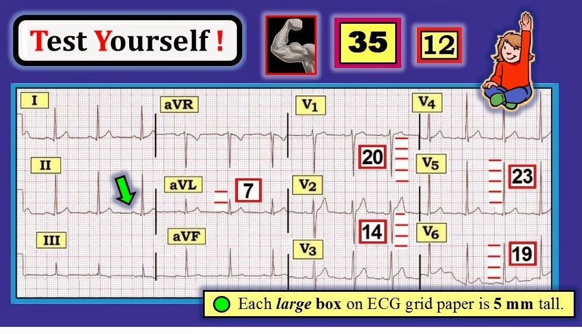
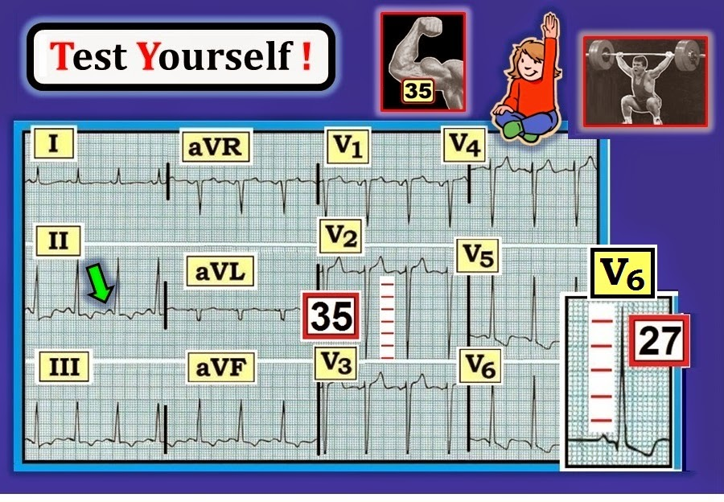
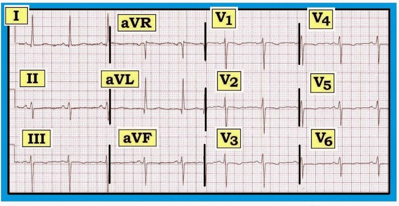
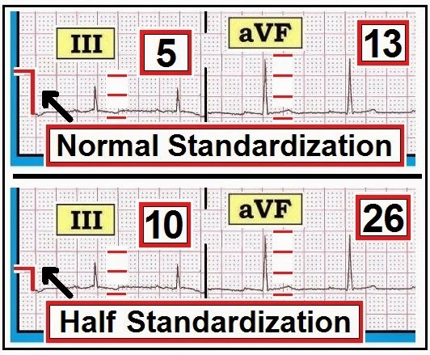
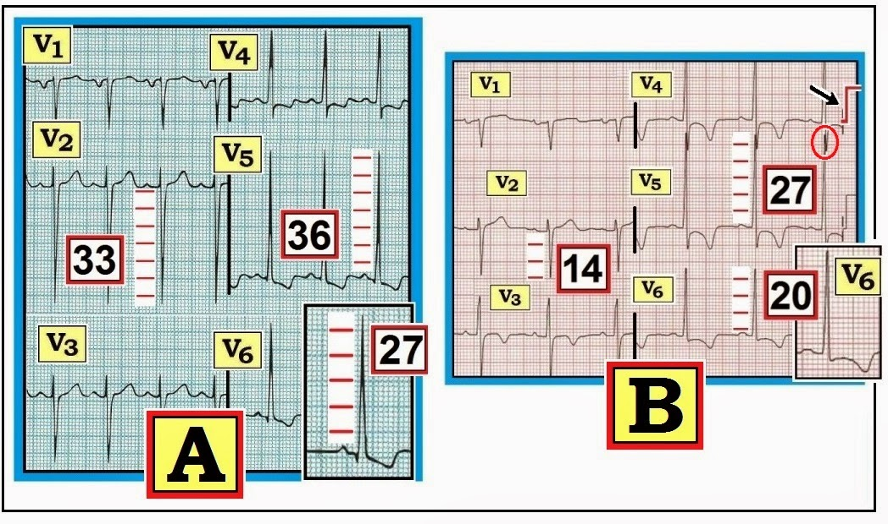

ECG Blog #92 (Basic Concepts-5) – LVH

--------------------------------
Đây là kỳ thứ 5 trong loạt bài Basic ECG Concepts (Các khái niệm cơ bản về điện tâm đồ) của tôi. Thay vì các ca bệnh cụ thể — mục tiêu của loạt Basic ECG Concepts này là ôn tập ngắn gọn một số chủ đề ít chuyên sâu hơn, vốn tạo nên nền tảng của việc đọc điện tâm đồ. Tài liệu này được trích, có chỉnh sửa, từ cuốn sách nhập môn mới của tôi về đọc điện tâm đồ = “A 1st Book on ECGs-2014” và/hoặc phiên bản mở rộng 1st-ECG-Book-ePub dạng sách điện tử (đã phát hành trên kindle-nook-kobo-ibooks). Rất HOAN NGHÊNH ý kiến phản hồi của bạn về loạt bài này!
--------------------------------
LƯU Ý: Để tăng tính thiết thực — một số điểm nâng cao đã được thêm vào nhằm minh hoạ một số khái niệm chọn lọc về chẩn đoán LVH trên điện tâm đồ (phần nội dung nâng cao hơn này được trích từ cuốn ECG-2014-ePub của chúng tôi). Bằng cách này — chúng tôi hy vọng bài viết sẽ thú vị và hữu ích cho người đọc điện tâm đồ ở mọi trình độ.
--------------------------------
LIÊN KẾT tới các bài Basic ECG Concepts trước đây:
- Basic Concepts #1 — Thuật ngữ QRS
- Basic Concepts #2 — Các khoảng (PR/QRS/QT )
- Basic Concepts #3 — Trục
- Basic Concepts #4 — Các nhóm chuyển đạo
- Basic Concepts #5 (chính là bài này! ) — LVH
- Basic Concepts #6 — Cách tiếp cận hệ thống
- Basic Concepts #7 — Thay đổi Q-R-S-T
--------------------------------


--------------------------------
Thông số thứ 5 trong Cách tiếp cận hệ thống của chúng tôi để đọc điện tâm đồ (sau khi đánh giá Tần số – Nhịp – Các khoảng – Trục) — là xác định Lớn các buồng tim (Phì đại).
- Lý do để việc đánh giá Lớn các buồng tim lùi đến thời điểm này trong quy trình (tức là cho đến sau khi đã đánh giá các khoảng) — là vì tiêu chuẩn lớn thất sẽ khác đi NẾU khoảng QRS kéo dài và bệnh nhân có blốc nhánh.
- LƯU Ý: Ở đây chúng tôi không bàn đến chẩn đoán LVH trên điện tâm đồ trong tình huống đặc biệt có LBBB nền — vì đây là một khái niệm nâng cao hơn. (Với những ai quan tâm đến khái niệm nâng cao này — Xem bài ECG Blog #11 của chúng tôi).
--------------------------------
TỔNG QUAN về Lớn
các buồng tim:
Với thông số “Phì đại” — chúng tôi đánh giá điện tâm đồ để tìm dấu hiệu Lớn các buồng tim. Điều này có thể bao gồm tăng độ dày thành buồng tim — tăng kích thước buồng tim (thể tích) — hoặc kết hợp cả hai.
- Có 4 buồng tim (Hình 1). Do đó — việc đánh giá hệ thống về lớn buồng tim nên xem xét tình trạng lớn của từng buồng trong 4 buồng này. Dù vậy — ở đây chúng tôi cố ý giới hạn phần bàn luận ở việc ôn lại các tiêu chuẩn chẩn đoán LVH (phì đại thất trái – Left Ventricular Hypertrophy) trên điện tâm đồ. Đây là dạng lớn buồng tim thường gặp nhất — và cũng là dạng bạn sẽ gặp nhiều nhất trên lâm sàng.
- Với những ai quan tâm — chúng tôi ôn lại chẩn đoán lớn nhĩ trên điện tâm đồ trong ECG Blog #75 — và chẩn đoán RVH (phì đại thất phải – Right Ventricular Hypertrophy) trong ECG Blog #77.


--------------------------------
Cơ sở của Tiêu chuẩn điện tâm đồ cho LVH
Lý thuyết của chẩn đoán LVH trên điện tâm đồ rất đơn giản: Một LV (thất trái – Left Ventricle) dày hơn và lớn hơn thì có khối lượng lớn hơn. Do đó, trên điện tâm đồ sẽ tạo ra độ lệch QRS lớn hơn. Chúng tôi minh hoạ điều này bằng sơ đồ ở Hình 2:


--------------------------------
Điều gì Xảy ra với Điện tâm đồ khi có LVH? Có thể hiểu rõ nhất cơ sở của các thay đổi điện tâm đồ trong LVH bằng cách ghi nhớ các điểm sau khi xem Hình 2:
- Trong Basic ECG Concepts #4 — chúng tôi đã ôn lại các vùng giải phẫu được đánh giá bởi từng chuyển đạo trong 12 chuyển đạo chuẩn của một điện tâm đồ. Qua đó cho thấy các chuyển đạo “bên trái” (hay chuyển đạo bên) trên điện tâm đồ — nên được hiểu là các chuyển đạo I, aVL, V5 và V6 (Xem Hình 1,2,3 và 6 trong Basic Concepts #4).
- Ngoài vai trò là chuyển đạo trước vách — các chuyển đạo V1 và V2 còn là chuyển đạo “bên phải” . Vị trí giải phẫu của các điện cực ghi chuyển đạo V1 và V2 rõ ràng nằm lệch về bên phải so với vị trí của 4 chuyển đạo ngực còn lại (Xem Hình 2 trong Basic Concepts #4).
- Hoạt hoá bình thường của LV hướng sang trái — vì đó là nơi thất trái nằm trong lồng ngực (mũi tên đỏ nhỏ ở Ô A của Hình 2).
- Cùng với sự gia tăng khối lượng LV xảy ra khi hình thành LVH — các lực hướng về phía LV tăng lên (mũi tên đỏ lớn hơn ở Ô B). Kết quả là — các chuyển đạo bên trái (V5,V6,aVL) cho thấy tăng biên độ (sóng R cao hơn) — và các chuyển đạo bên phải (V1,V2) biểu hiện sóng S sâu hơn (do có nhiều hoạt động điện đi ra xa bên phải hơn). Như chúng ta sẽ thấy ngay sau đây — các “con số kỳ diệu” cần nhớ là “35” và “12”.
--------------------------------
LVH: Tiêu chuẩn Điện tâm đồ để Chẩn đoán là gì?
Thực tế lâm sàng là điện tâm đồ không nhạy lắm trong việc phát hiện LVH. Nghĩa là — nhiều bệnh nhân có hoặc thành LV dày và/hoặc buồng LV giãn lớn lại không biểu hiện bất kỳ dấu hiệu LVH nào trên điện tâm đồ.
- Vì vậy, điện tâm đồ là một công cụ không hoàn hảo để đánh giá tình trạng lớn LV. Điện tâm đồ có phát hiện được nhiều bệnh nhân mắc các dạng LVH nặng hơn — nhưng rõ ràng không phát hiện được mọi trường hợp.
- Siêu âm tim (Echo – Echocardiogram) là xét nghiệm tốt hơn nhiều (dù đắt tiền hơn) — để phát hiện và định lượng độ dày thành LV và mức tăng kích thước buồng LV. Siêu âm tim cũng chính xác hơn nhiều khi đánh giá tình trạng lớn của 3 buồng còn lại (các buồng RA, LA và RV). Dù vậy, nếu một số tiêu chuẩn được thoả mãn — điện tâm đồ có thể gợi ý mạnh mẽ sự hiện diện của LVH đáng kể.
--------------------------------
Tiêu chuẩn Điện tâm đồ: Y văn điện tâm đồ có rất nhiều tiêu chuẩn
để chẩn đoán LVH. Không tiêu chuẩn nào hoàn hảo. Theo
kinh nghiệm của chúng tôi — các con số hữu ích nhất cần nhớ là
“35” và “12” — như được minh hoạ bằng hình ở Hình 3. Như vậy — Tiêu chuẩn
LVH được thoả mãn ở người lớn trên 35 tuổi NẾU:
- Tổng của sóng S sâu nhất ở V1 hoặc V2 + sóng R cao nhất ở V5 hoặc V6 là ≥ 35 mm.
- HOẶC — sóng R ở chuyển đạo aVL có biên độ ≥ 12 mm .
- VÀ — “tăng gánh” thất trái (LV “strain”) cũng hiện diện ở ít nhất 1 chuyển đạo bên (Xem các đoạn ST-T được đánh dấu đỏ-xanh lá ở Hình 3).


--------------------------------
CẢNH BÁO khi Chẩn đoán bằng Điện tâm đồ: Bạn sẽ không phải lúc nào cũng có thể biết có LVH hay không chỉ bằng cách nhìn điện tâm đồ. Có thể cần đến X-quang ngực hoặc siêu âm tim.
- Người trẻ tuổi (những người chưa đủ 35 tuổi) — thường có biên độ tăng mà không phải do thất trái lớn. Do đó — bệnh nhân phải ít nhất 35 tuổi thì tiêu chuẩn điện thế ở Hình 3 mới có giá trị. LƯU Ý: Chúng tôi nhấn mạnh rằng “ngưỡng” tuổi 35 còn xa mới là chính xác. Chúng tôi dùng con số này chủ yếu để nhớ rằng người lớn trẻ tuổi thường có biên độ phức bộ QRS tăng trên điện tâm đồ mà không phải do lớn buồng tim thật sự. Thật tiện lợi — con số “35” tương ứng với cả tiêu chuẩn tuổi lẫn tiêu chuẩn điện thế của LVH.
- Chỉ cần 1 tiêu chuẩn điện thế (35 hoặc 12) là đủ để chẩn đoán LVH.
- Về lâm sàng — khả năng lớn LV thật sự tăng lên rõ rệt NẾU trên điện tâm đồ có thay đổi ST-T kiểu “tăng gánh” ở ít nhất 1 trong các chuyển đạo bên. Chúng tôi làm nổi bật bằng sơ đồ hình dạng “tăng gánh” ở từng chuyển đạo trong 5 chuyển đạo bên, bên trong các khung đỏ-xanh lá ở Hình 3 (tức là ở các chuyển đạo I,aVL; V4,V5,V6).
--------------------------------
Thế nào
là “Tăng gánh” LV?
Rất khó định nghĩa “tăng gánh”. Trên điện tâm đồ — có ST-T chênh xuống không đối xứng — như gợi ý bởi mũi tên đỏ ở Ô C của Hình 4. Có lẽ điều này tương ứng với một LV dày lên nay đã vượt quá khả năng cấp máu của nó. Cũng có thể không phải. Điều quan trọng — là những thay đổi giải phẫu rõ rệt hơn của LVH thường tạo ra hình dạng ST-T như thấy ở Ô C (mũi tên đỏ).
- ĐIỂM THEN CHỐT (PEARL): Việc sử dụng Bệnh sử có thể hỗ trợ vô giá cho việc đọc điện tâm đồ. Ví dụ, xác suất thống kê có LVH tăng lên rõ rệt — NẾU bệnh nhân là người lớn lớn tuổi có tăng huyết áp lâu năm và/hoặc bệnh tim. Ngược lại — khả năng lớn buồng tim thật sự thấp hơn nhiều NẾU bệnh nhân là người lớn trẻ tuổi trước đó vẫn khoẻ mạnh (và không có tăng huyết áp hay bất kỳ bệnh tim nào khác).


--------------------------------
Phân biệt giữa Thay đổi Điện tâm đồ của “Tăng gánh” với Thiếu máu cục bộ
So sánh hình dạng sóng ST-T ở Ô C với Ô D trong Hình 4:
- Chúng tôi mô tả ST-T chênh xuống võng xuống ở Ô C (mũi tên đỏ) — là phù hợp với “tăng gánh” LV ở bệnh nhân có LVH.
- Ngược lại — đoạn ST ở Ô D không chênh xuống, và sóng T đảo ngược đối xứng (tức là độ dốc của nhánh xuống sóng T xấp xỉ bằng độ dốc của nhánh lên sóng T). Về lâm sàng — T đảo ngược đối xứng gợi ý thiếu máu cục bộ nhiều hơn hẳn so với “tăng gánh”.
ĐIỀU CỐT LÕI: Các mô tả về nhận dạng hình ảnh ở trên không hoàn hảo. Vì vậy — Cần đối chiếu lâm sàng. Ví dụ — một số bệnh nhân có thể có cả thiếu máu cục bộ và “tăng gánh” LV, khi đó hình dạng của thay đổi ST-T có thể không có giá trị dự báo tối ưu.
- LƯU Ý: Hiểu biết về những khái niệm tinh tế hơn này trong chẩn đoán LVH trên điện tâm đồ sẽ trở nên rõ ràng khi xem lại các bản ghi chúng tôi trình bày bên dưới ở Hình 5, 6, 7 và 9.
--------------------------------
TỔNG HỢP LẠI: Có LVH không?
Hãy xem bản ghi dưới đây:
- Có LVH không trên điện tâm đồ 12 chuyển đạo ở Hình 5?


--------------------------------
TRẢ LỜI cho Hình 5: Mặc dù không có dải nhịp dài chuyển đạo II — Chúng ta vẫn có thể nói rằng nhịp ít nhất là khá đều. Sóng P dương với khoảng PR cố định ở chuyển đạo II (mũi tên xanh lá) xác định cơ chế của nhịp là Xoang. Chúng tôi chấp nhận hoặc Nhịp xoang hoặc Loạn nhịp xoang (vì tần số có dao động nhẹ).
- Khoảng R-R là ~4 ô lớn. Do đó tần số = 300/4 ~75/phút.
- Cả 3 khoảng trên điện tâm đồ đều bình thường. Tức là — khoảng PR rõ ràng không dài quá 1 ô lớn; thời gian QRS không rộng quá 1/2 ô lớn; và, khoảng QT không dài quá 1/2 khoảng R-R. (Để ôn lại các khoảng — Xem Basic ECG Concepts #2).
- Trục bình thường — vì độ lệch QRS “thực” (net) ở cả chuyển đạo I và chuyển đạo aVF đều dương. Vì biên độ QRS “thực” ở chuyển đạo I có vẻ lớn hơn một chút so với biên độ “thực” ở chuyển đạo aVF — Chúng tôi ước tính Trục nằm gần chuyển đạo I hơn một chút (ở khoảng +30-40 độ). Với mục đích của phần “cơ bản” — Chúng tôi hài lòng nếu bạn chỉ nói trục “bình thường”. (Để ôn lại về Trục — Xem Basic ECG Concepts #3).
- ĐIỂM CHÍNH: Tuổi của bệnh nhân này không được cho biết. Dù bệnh nhân bao nhiêu tuổi — Điện thế ở chuyển đạo aVL vẫn bình thường (tức là <12 mm). Tuy nhiên, NẾU bệnh nhân này ≥35 tuổi — bệnh nhân sẽ có điện thế đạt tiêu chuẩn LVH (20 +23 >35 mm). Biên độ QRS sẽ là bình thường nếu bệnh nhân là người trưởng thành trẻ tuổi. LƯU Ý: Không có chuyển đạo bên nào (các chuyển đạo I,aVL,V4,V5,V6) biểu hiện thay đổi sóng ST-T kiểu “tăng gánh” (như đã minh hoạ ở Ô C của Hình 4). Thay vào đó — không có ST dẹt và sóng T dương ở mọi chuyển đạo bên.
LƯU Ý NÂNG CAO: Có sự khác biệt giữa việc nói một bệnh nhân có “điện thế đạt tiêu chuẩn LVH” với nói LVH kèm “tăng gánh”. Ngay cả khi bệnh nhân có điện tâm đồ ở Hình 5 trên 35 tuổi — việc không có “tăng gánh” có nghĩa là độ đặc hiệu đối với lớn buồng tim thật sự là thấp. Điều này trái ngược với tình huống chúng tôi mô tả trong ví dụ tiếp theo (Hình 6).
--------------------------------
TỰ KIỂM TRA:
Có LVH không? — Có “Tăng gánh” không?
Hãy đọc điện tâm đồ 12 chuyển đạo ở Hình 6.
- Bệnh nhân này 60 tuổi và có tiền sử lâu năm tăng huyết áp nặng. Thông tin này ảnh hưởng thế nào đến việc đọc điện tâm đồ của bạn?


--------------------------------
TRẢ LỜI cho Hình 6: Nhịp là Xoang với tần số ngay dưới 100/phút (mũi tên xanh lá chỉ sóng P dương ở chuyển đạo II). Tất cả các Khoảng đều bình thường. Trục bình thường, ở khoảng +70-80 độ. Gần như chắc chắn có LVH vì: i) Sóng S sâu nhất ở V1,V2 + sóng R cao nhất ở V5,V6 lớn hơn nhiều so với 35 mm; ii) có thay đổi sóng ST-T kiểu “tăng gánh” thất trái ; và iii) Bệnh sử phù hợp với chẩn đoán LVH.
- LƯU Ý LÂM SÀNG: Mặc dù chúng tôi đã nhấn mạnh rằng điện tâm đồ là một xét nghiệm không hoàn hảo để chẩn đoán LVH — gần như chắc chắn có LVH nặng ở Hình 6 vì: i) bệnh nhân là người trưởng thành ở độ tuổi nhất định (60 tuổi) — và bệnh nhân có tăng huyết áp nặng lâu năm; ii) biên độ QRS tăng rất mạnh (tức là 35 mm của sóng S ở chuyển đạo V2 + 27 mm của sóng R ở chuyển đạo V6 cộng lại vượt xa tiêu chuẩn 35 mm cần có để chẩn đoán LVH); và iii) Các thay đổi điển hình của “tăng gánh” thất trái có ở chuyển đạo V5,V6 (với đoạn ST ở các chuyển đạo này rất giống hình ở Ô C của Hình 4).
ĐIỀU CỐT LÕI: Đọc điện tâm đồ là một “nghệ thuật” kết hợp cả việc nhận ra các dấu hiệu trên điện tâm đồ — lẫn việc tích hợp các dấu hiệu này với bệnh sử lâm sàng. Mặc dù đây là một khái niệm nâng cao — Chúng tôi hy vọng những bản ghi như ở Hình 6 giúp bạn hiểu rõ hơn cách các dấu hiệu điện tâm đồ có thể được sử dụng trên lâm sàng.
--------------------------------
Khái niệm Nâng cao: Chẩn đoán LVH bằng Chuyển đạo aVL
Như được minh hoạ dạng sơ đồ ở Hình 3 — các tiêu chuẩn điện thế mà chúng tôi ưa dùng để chẩn đoán LVH trên điện tâm đồ bao gồm có sóng R ≥12 ở chuyển đạo aVL. Ở Hình 7, được ghi ở một bệnh nhân lớn tuổi bị tăng huyết áp — Chúng tôi minh hoạ cách chuyển đạo aVL có thể được dùng để nhận ra điện thế đạt tiêu chuẩn LVH khi các chuyển đạo ngực không đáp ứng được tiêu chuẩn điện thế cần thiết.
- Biên độ sóng R ở chuyển đạo aVL của Hình 7 — rõ ràng tăng vượt mức 12 mm cần thiết. Tức là, sóng R ở chuyển đạo aVL cao hơn 3 ô lớn (= hơn 15 mm). Điều này đáp ứng tiêu chuẩn điện thế của LVH.
- Tuy nhiên — hoàn toàn không có dấu hiệu điện thế đạt tiêu chuẩn LVH khi đánh giá biên độ QRS ở các chuyển đạo trước tim trong Hình 7 (tức là S sâu nhất ở V1,V2 + R cao nhất ở V5,V6 nhỏ hơn rất nhiều so với 35 mm).
- Vì chỉ cần 1 tiêu chuẩn điện thế để chẩn đoán — việc có sóng R cao ở chuyển đạo aVL (≥12 mm) trong Hình 7 đã đáp ứng tiêu chuẩn điện thế của LVH.
Điểm Nâng cao: Có LAD (trục lệch trái — Left Axis Deviation) ở Hình 7 — thể hiện rõ qua QRS chủ yếu âm ở chuyển đạo aVF cùng với QRS dương ở chuyển đạo I. Điều này ủng hộ nhận định rằng chuyển đạo aVL thường hữu ích nhất khi dùng làm tiêu chuẩn điện thế cho LVH trong trường hợp trục lệch về bên trái.


--------------------------------
LƯU Ý: Đừng quên kiểm tra Xung chuẩn (standardization mark)!
Phần lớn thời gian — máy điện tâm đồ được cài ở mức chuẩn hoá bình thường. Việc xác nhận điều này rất dễ thực hiện nhờ nhận ra xung chuẩn ở ngay đầu hoặc cuối bản ghi 12 chuyển đạo (mũi tên đen ở đầu chuyển đạo III trong Hình 8).
- Chuẩn hoá bình thường được thể hiện bằng một xung chuẩn hình chữ nhật cao 10 mm (=2 ô lớn).
- Đôi khi — các phức bộ điện tâm đồ có thể rất lớn và vượt ra ngoài khoảng dành cho một hoặc nhiều chuyển đạo trên bản ghi. Chọn Chuẩn hoá một nửa (half standardization) sẽ giảm biên độ sóng đi một nửa — nhờ đó toàn bộ phức bộ ở mỗi chuyển đạo lại nằm vừa trên giấy ghi điện tâm đồ và được nhìn thấy.
- Những khái niệm này được minh hoạ ở Hình 8 — trong đó Ô trên là hình phóng to chuyển đạo III và aVF ghi ở chuẩn hoá bình thường.
- NẾU thay vào đó, các chuyển đạo này được ghi ở chuẩn hoá một nửa — biên độ QRS thực tế sẽ gấp đôi mức hiển thị = 10 so với 5 ở chuyển đạo III; và 26 so với 13 ở chuyển đạo aVF (Ô dưới trong Hình 8).


--------------------------------
LƯU Ý: Trong những trường hợp hiếm — Bạn có thể gặp chuẩn hoá gấp đôi (double standardization), trong đó biên độ QRS thực tế chỉ bằng một nửa mức hiển thị. Cách này có thể được dùng khi biên độ QRS giảm rất nhiều (như có thể gặp trong tràn dịch màng ngoài tim lượng lớn). Chuẩn hoá gấp đôi được nhận ra nhờ một xung chuẩn hình chữ nhật cao 20 mm (=4 ô lớn). Như đã nói — Việc dùng chuẩn hoá gấp đôi là hiếm.
--------------------------------
Điểm Nâng cao: “Tăng gánh” thất trái? — Thiếu máu cục bộ? — hay cả hai?
Như đã đề cập ở trên — Thường có sự nhầm lẫn về việc liệu các thay đổi sóng ST-T đi kèm ở bệnh nhân có biên độ QRS tăng là biểu hiện của thiếu máu cục bộ hay “tăng gánh” — hay cả hai? Cách tốt nhất để tìm hiểu khái niệm này là so sánh song song một ví dụ lâm sàng (Hình 9):
- Ở cả Ô A và Ô B của Hình 9 — sóng S sâu nhất ở V1,V2 + sóng R cao nhất ở V5,V6 dễ dàng đáp ứng tiêu chuẩn điện thế của LVH.
- Ở Ô A — hình dạng sóng ST-T ở chuyển đạo V5,V6 gợi ý mạnh “tăng gánh” thất trái (có ST chênh xuống không đối xứng với đoạn dốc xuống võng chậm). Dù không thể loại trừ khả năng thiếu máu cục bộ (xét cho cùng, vẫn có điểm J chênh xuống — đặc biệt ở chuyển đạo V4) — khi không có tiền sử đau ngực, chúng tôi nghi ngờ các thay đổi ở Ô A chủ yếu biểu hiện LVH kèm “tăng gánh”.
- Ngược lại, ở Ô B — đoạn ST có dạng vòm (coving) từ V3 đến V6. Ngoài ra, có điểm J chênh xuống 1-2 mm (dưới đường nền đoạn PR) ở chuyển đạo V4,V5,V6 — kèm sóng T đảo ngược sâu và có vẻ đối xứng hơn nhiều (đặc biệt ở chuyển đạo V4,V5). Hình ảnh này gợi ý nhiều hơn đến thiếu máu cục bộ.
- Đặc biệt — chuyển đạo V3 ở Ô B trông có vẻ thiếu máu cục bộ (“tăng gánh” thất trái đơn thuần hầu như không bao giờ tạo ra ST dạng vòm và sóng T đảo ngược đối xứng ở vị trí phía trước như thế này).
- Chuyển đạo V6 ở Ô B — có hình ảnh trung gian giữa “tăng gánh” và/hoặc thiếu máu cục bộ. Do bệnh nhân này “lớn tuổi” và có tiền sử bệnh tim và rõ ràng đáp ứng tiêu chuẩn điện thế của LVH — Chúng tôi sẽ đọc bản ghi này là “LVH và “tăng gánh” và/hoặc thiếu máu cục bộ.” Cần đối chiếu lâm sàng và so sánh với các bản ghi trước để xác định LIỆU có đang diễn ra một quá trình thiếu máu cục bộ cấp hay không.


--------------------------------
LƯU Ý CUỐI CÙNG: Dành cho độc giả muốn tìm hiểu thêm — Chúng tôi tiếp cận chẩn đoán LVH trên điện tâm đồ từ một góc nhìn hơi khác trong ECG Blog #73:
- Chúng tôi cũng nêu một số tiêu chuẩn điện thế bổ sung cho LVH trong Blog #73. Tuy vậy — trong ~90% trường hợp có thể chẩn đoán LVH bằng điện tâm đồ, việc dùng các con số “12” và “35” như mô tả trong bài Basic ECG Concepts #5 này là tất cả những gì bạn cần.
--------------------------------
— Để biết thêm thông tin — TRUY CẬP —
- Nội dung và các Hình #1-thru-6 được trích từ ấn phẩm mới nhất của chúng tôi = “A 1st Book on ECGs-2014” và/hoặc từ phiên bản ePub mở rộng của 1st Book (có trên kindle-kobo-nook-ibooks).

- -
- Nội dung nâng cao hơn và các Hình #7,8,9 được trích từ ECG-2014-Pocket Brain và/hoặc từ phiên bản ePub mở rộng của ECG-2014 (có trên kindle-kobo-nook-ibooks).

- -
- Mời bạn Tải Miễn phí GLOSSARY (bảng chú giải) mở rộng của chúng tôi về các thuật ngữ liên quan đến điện tâm đồ.

- -
--------------------------------------------------------------